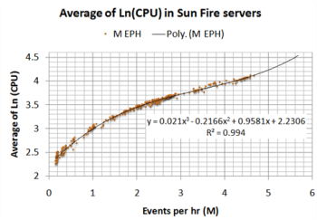

How academic collaboration improved hardware capacity forecasting at Amdocs GSS, contributing to $10M in savings
[Lead paragraph: opening context about the Explore! Academia program and the CAT research project]
First implementation of this research contributed to
$10M hardware savings[Background section content]
[Description of the CAT model and collaboration]

[Impact description]
[Quote about collaboration success][Attribution]
[Program description]
Sasha Apartsin was a Computer Science PhD student at Tel-Aviv University during this project, bringing research expertise in statistical analysis combined with prior industry experience in telecom infrastructure.